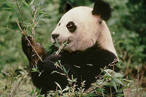
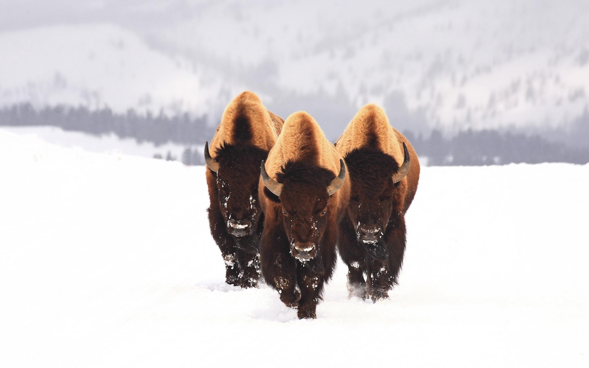
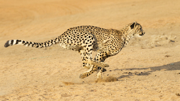
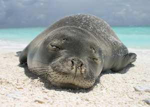
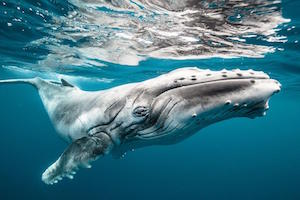

Giant Panda
The giant panda is only found in central and western China, and only 1000 to 2000 remain in the wild.
Asiatic Lion
Asiatic lion populations have suffered due to sport hunting in the 1800s (until it was outlawed) and habitat loss due to the clearing of jungle forest for extracting wood and human settlement

American Bison
Historically the population for the wood bison was over 160,000. But due to hunting, the population was reduced to less than 250 by 1900.
Cheetah
The cheetah is threatened by habitat loss and hunting for their spotted pelt. They are also sometimes killed by farmers protecting their livestock.
Hawaiian Monk Seal
There are less than 1000 Hawaiian monk seals left in the wild.
Humpback Whale
There are only about 6,000 humpback whales left in the oceans.
